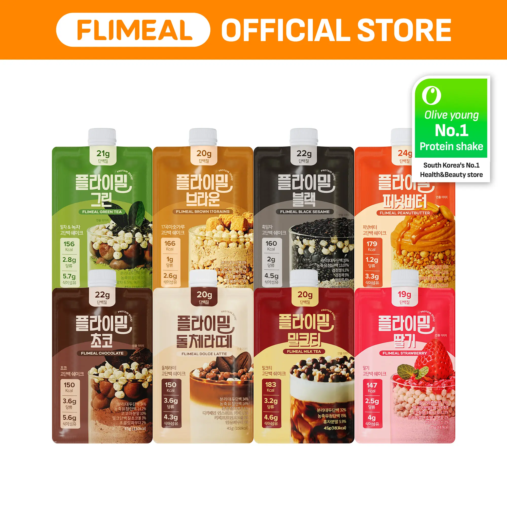

Product Image
Flimeal Core 7-Pack


In the first few seconds, prove 3 things: what it is, why it's different, and when to drink it.
This is a protein shake in a pouch. Just add water or milk, shake, and drink. It contains crunchy bits, so it's not just a standard liquid shake.
People who want an easy protein option that still tastes good and doesn't feel like a hassle.
This pattern doesn't rely on a single creator's personality. Different creators use the same framework: introduce a specific life scenario, establish credibility with macros, prove taste with crunch/flavor, and clarify the first-time purchase path.
I just worked out, let's have a protein shake, today we're doing 17 grain.
Opened with a post-workout scenario + chewing sounds + macros.
Protein shake of the day, black sesame. I've been loving this flavor. 22 grams of protein, 160 calories, and only 2 grams of sugar.
Doesn't open with a life scene. It opens with flavor love plus macro proof, then layers in black rice crunch, Asian-flavor variety, and the variety-pack buying path.
22 grams of protein, 160 calories and only two grams of sugar. I just got back from Pilates.
Started with a Pilates scenario and Black Sesame hype, then connected crunch, variety, and portability.
This opening works because the crunch, post-workout scenario, and nutritional numbers all land within the first 20 seconds.
People who want post-workout protein but hate boring, chalky shakes.
She's looking for something nutritionally valid that isn't as dull as traditional protein powder.
Must-haves:Replicate the post-workout entry, macro credibility, and sensory proof. Be cautious about framing it as a universal meal replacement.
Note:The real risk isn't the crunch; it's calling 166 calories a 'universal meal replacement'.
| Time | What happened in this segment | Why this segment sells |
|---|---|---|
Post-workout entry + macros for credibility Action / Visuals Chewing for the camera, drinking from the pouch, then zooming in on the nutritional facts. On-screen Text Korean Protein Shake / 17 Grains with crunchy protein balls. Later, the pouch macros are visible while she points. Original Script/Voiceover I just worked out, let's have a protein shake, today we're doing 17 grain, which is Korean misutgaru flavor. These are my favorite Korean protein shake pouches, it has 20 grams of protein, 166 calories, 1 gram of sugar, and 2.6 grams of fiber. Audio Chewing sounds followed by drinking and swallowing sounds. | This segment grabs attention with sensory interest, then immediately validates the product with macros. Order matters: crunch stops the scroll, macros ensure it doesn't look like just a novelty snack. | |
Multi-flavor spread + crunch differentiator Action / Visuals Showing multiple flavors while pointing to the crunchy elements on the packaging. Original Script/Voiceover I love them because number one, they taste so good, all of these amazing flavors. Chocolate green tea, black sesame milk tea, and number two, every flavor has a crunchy element, they all have crunchy protein balls, and like an added element based on the flavor. This one has brown rice puffs, and strawberry one has fresh dry strawberries. Audio Mainly voiceover with slight packaging rustle. | The real selling point isn't just 'many flavors,' but that it's different from smooth shakes due to its chewable texture. She's not selling generic nutrition; she's selling something people actually look forward to drinking. | |
Busy morning / post-workout scenario fit Action / Visuals Holding the pouch while gesturing toward herself and the workout setting to keep the product in a real-life context. Original Script/Voiceover Number three, the macros are so good, they're really good. It's a meal replacement, like especially in the morning when you're busy, just like bringing this pouch so easy, and if you drink it after workout, it helps you gain so much muscle like they are the best. Audio Talking directly to the camera, no extra demo needed. | This segment moves the product from 'novelty' to 'routine,' showing exactly where it fits in life. The 'busy morning' and 'post-workout' bridge is effective. The 'meal replacement' claim is a driver but also a risk. | |
Variety pack as the first-buy path Action / Visuals Displaying multiple pouches to keep the variety pack concept front and center. Original Script/Voiceover You have to try the variety pack because it comes with all 7 flavors, you can try them all, and then you can start getting them in bulk once you find the flavors that you like. The variety pack helps you not get tired of the flavors, like I can choose different flavors every day, because during the repetition, you can get tired of it, but with this, you don't get tired of it. Audio Sound of pouches hitting the table and slight rustling. | This segment sells the path to purchase: try 7 flavors first, then buy your favorite in bulk. It lowers first-purchase flavor risk instead of asking someone to blindly buy a large size right away. |
This hook succeeds because the pouring action, captions, and healthy fallback scenario all work together.
Busy consumers who don't want junk food but are too lazy to cook a full meal.
She addresses the convenience gap for quick meals, ideally without blenders or cleanup.
Must-haves:Keep the early prep demo, fill-line tip, and on-the-go close. Be careful not to overpromise on satiety.
Note:The risk isn't convenience; it's how much of a 'meal' you claim it is.
| Time | What happened in this segment | Why this segment sells |
|---|---|---|
Pour-in-pouch + healthy fallback scenario Action / Visuals Pouring milk into the pouch and holding it up so you know exactly what it is. On-screen Text my favorite way to increase my protein intake!! Original Script/Voiceover This is what I eat whenever I don't want to have an actual meal, but don't want to touch anything unhealthy. This is a protein shake and you literally just add water or milk to it. Audio Pouring sound followed by steady voiceover. | The hook itself is a prep demo: format, use case, and healthy fallback framing all in one. She doesn't just describe convenience; she demonstrates it. | |
Fill-line tip + shake + crunch reveal Action / Visuals Pointing out the fill line, explaining consistency, shaking the pouch, and pointing to the cereal-ball visuals. On-screen Text dissolve in seconds Original Script/Voiceover Fill my up to here because I don't want it to be too thick. It's so genius. I just need to shake it. It is like cereal balls inside so it's crunchy. Audio Sound of liquid and contents sloshing while shaking. | This segment removes prep friction and turns texture into proof. She makes it look easy to use, then explains why it's different from smooth shakes. | |
Tasting reaction + 21g protein + daily staple Action / Visuals Tasting, reacting positively, pointing to the 21g protein count, and screwing the cap back on. On-screen Text So good!!! Original Script/Voiceover And the best part is you get 21 grams of proteins. This is perfect for people who are on the go. It's a staple in my household. Audio Drinking sound followed by a closing voiceover. | The taste reaction dispels doubt, while the 21g protein and on-the-go aspect make it look like a repeat purchase. It's not just 'drinkable'; it looks like something she'd keep as a long-term staple. |
This isn't the main Hero SKU pattern, but it's worth borrowing. The value isn't in the word 'K-pop,' but in: curiosity about ideal body types + snack conflict + snackability proof (pouch/crunch) + 'not heavy/cravings' framing.
Ever wonder how K-pop idols stay so snatched but seem to snack all the time?
Leads with the K-pop curiosity hook, then makes the pouch feel like a frozen treat.
Ever wonder how K-pop idols stay so snatched but are literally always snacking?
Gets to 'not bloated' faster and shows how to control the texture.
Ever wonder how K-pop idols snack all the time but still stay so snatched?
Combines the K-pop hook, prep demo, and authority close more cleanly.